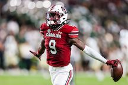
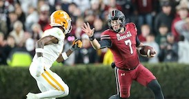

The Greatest Gamecock Football Players of All Time
Introduction to Gamecock Legends
Gamecock football has a rich history, deeply ingrained in the culture of the University of South Carolina and the broader college football landscape. The team, known for its passionate fan base and fierce competitiveness, has produced a remarkable lineage of players who have left an indelible mark on the sport. Over the years, these athletes have not only broken records but also embodied the spirit and resilience that define the Gamecock legacy. Whether through game-changing plays or consistent performance on the field, these players have become legends in their own right, inspiring generations of fans and future players alike.
Among the many athletes who have donned the garnet and black, a select few stand out for their exceptional contributions to the team. These players have earned their place in Gamecock lore through their talent, dedication, and leadership. From the powerful running of George Rogers, who brought home the Heisman Trophy in 1980, to the fearsome presence of Jadeveon Clowney on the defensive line, each player has a unique story that adds to the rich tapestry of Gamecock football history. Their achievements have not only elevated the team's status but have also brought national attention to the University of South Carolina, cementing its place as a formidable force in college football.
 | Player Name | Position | Years Active |
|---|---|---|
| George Rogers | Running Back | 1977-1980 |
| Jadeveon Clowney | Defensive End | 2011-2013 |
| Connor Shaw | Quarterback | 2010-2013 |
| Alshon Jeffery | Wide Receiver | 2009-2011 |
| Steve Wadiak | Running Back | 1948-1951 |